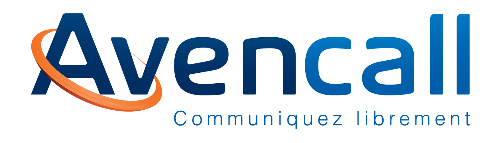
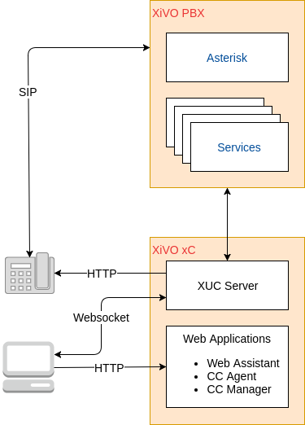
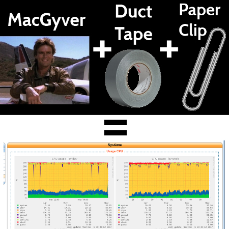

“En supervision, on est des nazes !” E.A.
“En supervision, on est des nazes !”
(Enfin, surtout personne ne veut le faire)

Doit être pensé très tôt.
Deux cas d'usages:
Un système de supervision est un système qui évolue:
Nécessaire pour l'alerting !
???
Question ?
https://github.com/jpthomasset/poss-monitoring